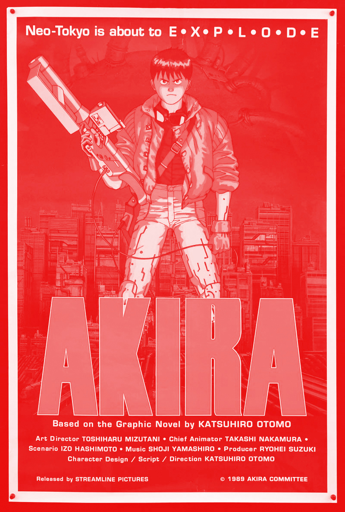
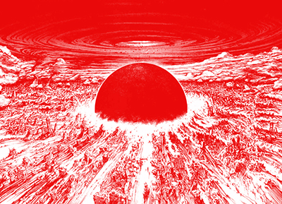
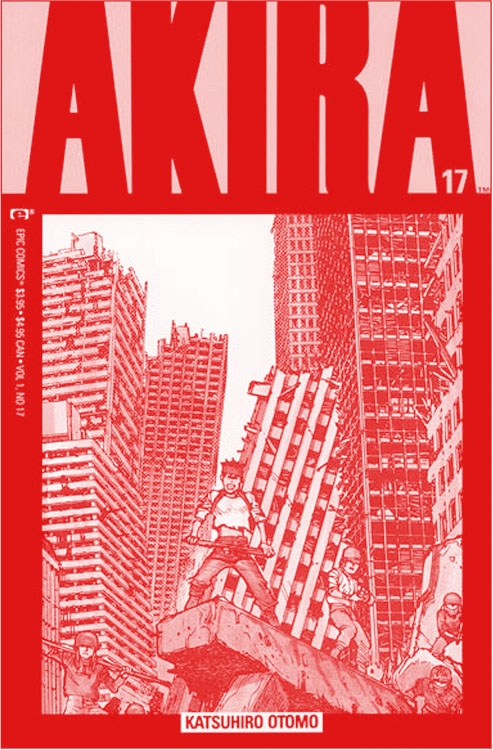
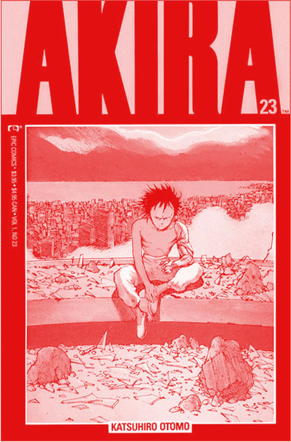

<!DOCTYPE html><html><head><meta name="viewport" content="width=device-width, initial-scale=1"><style></style></head></html><html lang="en"><head><meta charset="utf-8"><meta http-equiv="X-UA-Compatible" content="IE=edge"><meta name="viewport" content="width=device-width, initial-scale=1.0"><title>Akira</title><link rel="stylesheet" href="index.62206b2f.css"></head><body> <div class="header"> <div class="progress-container"> <div class="progress-bar" id="myBar"></div> </div> </div>  <div style="margin-top:40px;" class="divider"></div> <h1 class="title"> From Ground Zero to Degree Zero:  Akira From Origin to  Oblivion</h1>  <div class="break"></div> <div class="divider"></div> <h1 class="contents_title">CONTENTS</h1> <div class="contents_container"> <div id="essay1" class="contents_button_container"> <div class="contents_button_label">S1.</div> <div class="contents_button_title">From Ground Zero to Degree Zero</div> </div> <div id="essay2" class="contents_button_container"> <div class="contents_button_label">S2.</div> <div class="contents_button_title">Ground Zero: Akira's Nuclear Origins</div> </div> <div id="essay3" class="contents_button_container"> <div class="contents_button_label">S3.</div> <div class="contents_button_title">Degree Zero: Akira's Postmodernism</div> </div> <div id="essay4" class="contents_button_container"> <div class="contents_button_label">S4.</div> <div class="contents_button_title">Another Conclusion (And another after that)</div> </div> <div id="essay5" class="contents_button_container"> <div class="contents_button_label">S5.</div> <div class="contents_button_title">An Inconclusive conclusion</div> </div> </div>  <div class="break"></div> <div id="tag1" class="divider"></div> <div class="essay_container"> <div class="essay_title_container"> <h1 id="resize1" class="essay_title">From Ground Zero <br>to Degree Zero</h1> </div> <p class="essay_body"> Let me begin with my own origin story. It was in March 1990 at the Music Box Theater in Chicago that I first saw Akira, and as the anime unfolded from its astonishing opening sequence, it set off a reaction in me. It was one of a series of encounters with Japanese film and fiction that year that propelled a software engineer improbably into graduate school in Japanese literature, as if the light coming off the theater screen had changed me in parallel with the film’s story of psychic radiation, mutation, and transformation.<span class="footnote">1</span> And clearly I was not alone. <br><br> For anyone seeking the origins of the anime boom in the United States, Otomo Katsuhiro’s 1988 film is an irresistible starting point. One of the most lavishly produced anime to date, Akira brought anime from U.S. TV screens onto movie screens, a format suited to the epic physical scale of Otomo’s story.<span class="footnote">2</span> Even its limited U.S. theatrical release in 1989 and 1990 attracted wide attention from audiences and critics. This has led many to identify Akira as the origin or ground zero for the explosion of anime’s popularity in North America in the 1990s. <br><br> In what follows I will examine Akira’s critical reception in the United States, to ask what was unique about this film at the time and what remains remarkable twenty-five years later. Paradoxically, Akira has been regarded both as a watershed moment in the history of anime and as an attempt to erase history itself, based primarily on its frenetic visuals and complex plot. I would like to look more concretely at the visual language of Akira by comparing it with a similar story in a different medium, the epic Akira manga that Otomo authored in parallel with the film. The comparison shows more specifically how the visual language of the film and the manga support or undermine the search for the kind of historical and political narratives we might associate with decisive origins or causes and complex plot. I would like to look more concretely at the visual language of Akira by comparing it with a similar story in a different medium, the epic Akira manga that Otomo authored in parallel with the film. The comparison shows more specifically how the visual language of the film and the manga support or undermine the search for the kind of historical and political narratives we might associate with decisive origins or causes. </p> <div class="footnote_container"> <div class="footnote_container_inner"> <h4 class="footnote_gap">1.</h4> <div class="footnote_body footnote_gap">My thanks to Yuko Kanno, whose “initiation tale” in an earlier volume of Mechademia was one of the inspirations for this opening. Yuko Kanno, “Implicational Spectatorship: Hara Setsuko and the Queer Joke,” Mechademia 6 (2011): 288.</div> <h4><a href="https://muse.jhu.edu/article/454428" target="_blank">Link to Source</a></h4> </div> <div class="footnote_container_inner"> <h4 class="footnote_gap">2.</h4> <div class="footnote_body footnote_gap">Otomo Katsuhiro, dir., Akira, special ed., 2 subtitled DVDs (Pioneer, 2001). For ways the film’s production broke new ground in Japan, see the documentary “Akira Production Report” on this DVD. To locate Akira within the context of anime and manga’s earlier history in North America, see Fred Patten, Watching Anime, Reading Manga: 25 Years of Essays and Reviews (Berkeley, Calif.: Stone Bridge, 2004), 52–73, 122–26, 128–29.</div> <h4><a href="https://www.amazon.com/Watching-Anime-Reading-Manga-Reviews/dp/1880656922" target="_blank">Link to Source</a></h4> </div> </div>  <div id="shift1" class="image_basic_container"> <h4 class="image_figure">Fig. 1</h4>  <div class="image_description">The opening sequence of the 1988 Akira anime, with an explosion that seemed to signify both a past war and a future media revolution. Images from the anime are captured from the 2001 Pioneer DVD.</div> </div> </div>  <div class="break"></div> <div id="tag2" class="divider"></div> <div class="essay_container"> <div class="essay_title_container"> <h1 id="resize2" class="essay_title">Ground Zero:<br>Akira's Nuclear<br>Origins</h1> </div> <p class="essay_body threeliner"> The characterization of Akira as a kind of bombshell that set off the anime boom is all the more tempting given the film’s opening sequence, which is a literal explosion. The film fades in on an aerial view of a city, with the superimposed title “1988.7.16. Tokyo” (the date of the film’s Japanese release). As the camera pans up to take in more and more of the distant city, there is the sound of wind on the otherwise silent soundtrack, and then a dome of alternating light and darkness appears at a distant point in the city’s center. It illuminates the entire city in a harsh glare and then expands toward the viewer, sweeping away the city, until the light fills the frame (Figure 1). Slowly, an aerial view of a new, transformed city resolves itself out of this whiteness. An echoing drumbeat marks a transition to a more musical soundtrack, and a second title appears: “31 years after WW III. AD 2019 Neo Tokyo.” <br><br> This ninety-second opening image — of a detonation that heralds violent change and renewal — became a metaphor for the influence of Akira on North American popular culture and anime’s fortunes in the United States. As one popular guide to anime has it, “Just as the bubble of Japan’s economy of the 1980s was about to burst, a bomb of a more positive nature detonated, with the premier of Akira.”<span class="footnote">3</span> But of course the more disturbing parallel is between this opening detonation and the atomic bombings of Japan. To see Akira in the United States in 1990 was to be transported back in history to the moment of Hiroshima at the very same instant one seemed to be lifted out of the story and out of the theater to see a flash of a new future for Japanese film (Figure 2).<span class="footnote">4</span> In fact, these two senses of the explosion—as a celebratory, artistic, even metatextual one that seems to productively explode the rules or boundaries a whole genre or medium on the one hand, and the dark immersive or illusionistic historical reminder—seem to sum up the oscillation that is at the heart of Akira. <br><br> English reviews and criticism of Akira have emphasized both sides of the film. In readings that emphasize the nuclear origins of Akira, it is said to represent a fixation on destruction that supposedly lies at the heart of Japanese popular culture, a legacy of the atomic bombings. This reading suggests Hiroshima and Nagasaki as original traumas that are then worked out and mastered through their repetition in popular culture. “It is easy to recognize the outlines of the Japanese A-bomb anxiety that has been embedded in their popular culture from Godzilla onward,” Dave Kehr writes in an early review of the film, and academic readings have often followed a similar tack.<span class="footnote">5</span> <br><br> This thesis about the nuclear origins of Japanese popular culture has been sustained more recently by the Japanese visual artist Murakami Takashi. In 2005 Murakami curated a high profile exhibition titled “Little Boy” at the Japan Society in New York City, [End Page 297] where he displayed anime, manga, monster films, and toys alongside his own paintings and sculptures and the work of his artistic circle. The exhibit drew a direct line from the Hiroshima bomb (code-named “Little Boy” by its inventors) to the otaku (the “little boys”) who produce and consume the narratives of disaster, mutation, and invasion that figure so prominently in Japan’s popular culture. “These images bespeak a profound psychological repression,” wrote Sawaragi Noi in the exhibition catalog, suggesting that memories of defeat and later fears of Cold War nuclear annihilation “have never been channeled into a legitimate political consciousness. Instead, they have been transformed into the monstrous catastrophes and apocalyptic delusions depicted in the bizarre world of manga and anime.” Significantly, Otomo’s Akira manga occupied a central place in the exhibition catalog: Murakami’s programmatic essay in the catalog referred to the anime as “an epic film that would define an era” and devoted more text to the manga than to any other single work in the exhibit.<span class="footnote">6</span> </p>  <div class="footnote_container threeliner"> <div class="footnote_container_inner"> <h4 class="footnote_gap">3.</h4> <div class="footnote_body footnote_gap">Simon Richmond, The Rough Guide to Anime: Japan’s Finest from Ghibli to Gankutsuo (London: Rough Guides, 2009), 36.</div> <h4><a href="https://www.amazon.com/Rough-Guide-Anime-Reference/dp/1858282055" target="_blank">Link to Source</a></h4> </div> <div class="footnote_container_inner"> <h4 class="footnote_gap">4.</h4> <div class="footnote_body footnote_gap">This move forward and backward is even clearer in the chronology of the Akira manga: there, World War III breaks out in December 1982, thirty-seven years after the end of World War II, and the main action takes place in 2019, thirty-seven years after World War III. December 1982 is also the same month and year the manga began serialization; the anime version and the English-language manga altered the dates to associate the initial explosion and the war with the viewer or reader’s own present and locate the main action a generation later.</div> </div> <div class="footnote_container_inner"> <h4 class="footnote_gap">5.</h4> <div class="footnote_body footnote_gap">Dave Kehr, “Japanese Cartoon Akira Isn’t One for the Kids,” Chicago Tribune, March 30, 1990, D.</div> <h4><a href="https://www.chicagotribune.com/news/ct-xpm-1990-03-30-9001260575-story.html" target="_blank">Link to Source</a></h4> </div> <div class="footnote_container_inner"> <h4 class="footnote_gap">6.</h4> <div class="footnote_body footnote_gap">Noi Sawaragi, “On the Battlefield of Superflat: Subculture and Art in Postwar Japan,” trans. Linda Hoagland, in Little Boy: The Arts of Japan’s Exploding Subculture, exhibition catalog, ed. Takashi Murakami (New York: Japan Society; New Haven, Conn.: Yale University Press, 2005), 204–5; Murakami Takashi, “Earth in My Window,” trans. Linda Hoagland, in the same volume, 109.</div> <h4><a href="https://www.gwern.net/docs/eva/2005-sawaragi" target="_blank">Link to Source</a></h4> </div> <div class="footnote_container_inner"> <h4 class="footnote_gap">7.</h4> <div class="footnote_body footnote_gap">The extensive coverage of the “Little Boy” show in the New York Times and elsewhere largely repeated Murakami’s arguments about Japanese art and history. Even negative reviews of the show treated the underlying ideas credulously. For examples, see Roberta Smith, “From a Mushroom Cloud, a Burst of Art Reflecting Japan’s Psyche,” New York Times, April 8, 2005, E2:33; Matthew Gurewitsch, “Perpetual Adolescence as a Counterweight to History,” Wall Street Journal, April 7, 2005, D8.</div> <h4><a href="https://www.wsj.com/articles/SB111282763381800150" target="_blank">Link to Source</a></h4> </div> <div class="footnote_container_inner"> <h4 class="footnote_gap">8.</h4> <div class="footnote_body footnote_gap">Derrida writes of “the moment when language invaded the universal problematic, the moment when, in the absence of a center or origin, everything became discourse . . . that is to say, a system in which the central signified, the original or transcendental signified, is never absolutely present outside a system of differences. The absence of the transcendental signified extends the domain and the play of signification infinitely.” Jacques Derrida, “Structure, Sign, and Play in the Discourses of the Human Sciences,” in Writing and Difference, trans. Alan Bass (Chicago: University of Chicago Press, 1978), 280.</div> <h4><a href="http://www2.csudh.edu/ccauthen/576f13/drrdassp.pdf" target="_blank">Link to Source</a></h4> </div> </div>  <div id="shift2" class="pullquote">The idea of the nuclear explosions over Hiroshima and Nagasaki as the origins of Japanese popular culture, a big bang from which all else springs, satisfies our desire for origins or explanations.</div> <p class="essay_body row2"> The popularity of the “Little Boy” show clearly owes much to the rhetorical power of this thesis, which is hard to refute and temptingly easy to understand and repeat. The idea of the nuclear explosions over Hiroshima and Nagasaki as the origins of Japanese popular culture, a big bang from which all else springs, satisfies our desire for origins or explanations. Faced with the bewildering variety of Japanese pop culture products and the disturbing mix of the familiar and alien that we find there, it is not surprising that we feel the desire for some kind of historical key that will unlock the meaning of these images, and this is precisely what Murakami provided.<span class="footnote">7</span> <br><br> This is a powerful and plausible idea, but one with important political pitfalls: it can encourage a kind of victim consciousness that elides Japan’s own wartime responsibilities, as well as a passive stance focused on past experience rather than future responsibilities. But here I would like to highlight a pitfall for reading, which is the reductionism of this interpretation, the way its sense of a decisive origin seems to close off more complex, more original, and potentially more productive interpretations. <br><br> For the last several decades at least, literary theory has struggled to reconcile its desire to connect literature to concrete, real-world events with its growing suspicion of unitary stable meanings for literary texts. There is a range of shorthand for the core or irreducible meaning these theories call into question, including “presence,” “metaphysics,” “transcendence,” or “depth”; but “origin” will do as well as any other.<span class="footnote">8</span> So while they talk about its atomic origins, academic readings of Akira have also been inclined to see it as a loss or effacement of origins, a text that undermines the search for unitary meaning or interpretation and instead portrays a world in which there is no stable ground that could anchor interpretation. This literary critical suspicion of origins arguably reached a peak in the early 1990s when Akira appeared, so it is not surprising that this approach suggested itself at the time, but even today many of these readings remain convincing in their core contention that Akira is a text about the unreliable function of language itself. </p> </div>  <div class="carousel_container">    </div> <div class="carousel_description_container"> <div class="carousel_description_fig">Fig.&nbsp2</div> <div class="carousel_description_caption">A movie poster used to advertise Akira for its American theatrical release, purchased at Chicago’s Music Box Theater in 1991. Note the focus on the trope of explosion.</div> </div>  <div class="break"></div> <div id="tag3" class="divider"></div> <div class="essay_container"> <div class="essay_title_container"> <h1 id="resize3" class="essay_title">Degree Zero Akira's<br>Postmodernism</h1> </div> <p class="essay_body"> Readings of the Akira anime as an effacement of origins have often invoked theories of the postmodern, theories that link the pace and flood of language in contemporary art and literature with an inability to construct meaningful political narratives. The term “postmodern” has been applied repeatedly to Akira, beginning with Susan Napier’s influential 1993 article “Panic Sites,” itself a kind of origin point for academic criticism of anime in North America.<span class="footnote">9</span> These readings focus on the film’s frantic visual pacing, which looks to some like a ceaseless rotation of vivid images unconnected by any coherent plot. Fredric Jameson identifies the postmodern closely with this kind of rapid but unstructured flow of language and imagery, which he relates to “the breakdown of the signifying chain… an experience of pure material signifiers, or, in other words, a series of pure and unrelated presents in time.” The effect, says Jameson, is that the instantaneous present “suddenly engulfs the subject with undescribable vividness, a materiality of perception properly overwhelming, which effectively dramatizes the power of the material—or better still, the literal—signifier in isolation.”<span class="footnote">10</span> This is the erasure of deep meaning that Jean Baudrillard refers to as the “triumph of superficial form, of the smallest common denominator of all signification, degree zero of meaning.”<span class="footnote">11</span> For Jameson this loss of time and self not only erases our sense of historical narrative (historical cause and effect), it also undermines the kind of firm subjectivity that allows one to see oneself as an individual actor who can intervene to affect the future course of events. The resulting sense of freedom or lightness—exhilarating but disturbingly empty—is in some sense the essence of Jameson’s postmodern aesthetic. Writing shortly after Napier, Freda Freiberg describes Akira as postmodern in precisely these terms: “In the absence of narrative coherence, the film grabs and grips the viewer by its visceral excitement, a constant bombardment and battering of the senses, a barrage of high intensity experiences.”<span class="footnote">12</span> <br><br> This reading of Akira is supported not only by the film’s visuals but also by the confusion of its plot. Many initial reviews of Akira found the events of the film incomprehensible, and even later critics with the luxury of a DVD player have asserted that it somehow defies summary.<span class="footnote">13</span> Although Akira’s politics are often confounding, the events of the story are fairly straightforward: one night while out riding with his motorcycle gang, the teenage Tetsuo crashes his bike into a young boy with prematurely aged features, who turns out to be a test subject escaped from a secret government project. The collision sets off a series of transformations in Tetsuo that give him psychic powers like those of the test subjects. As these powers grow, Tetsuo becomes increasingly unbalanced and destructive, first killing his fellow gang members and eventually battling the Japanese army through the streets of Tokyo. Tetsuo is following a series of clues toward the font of psychic power at the heart of the secret project, a force known to us only as “Akira.” This psychic energy, we discover, is the source of the original explosion that touched off World War III at the start of the project, thirty-seven years ago. Throughout the film Tetsuo is pursued by his friend and rival in the gang, Kaneda, as well as the aged children who are the other test subjects, the shadowy “Colonel” (Taisa), who is now in charge of the project, and a group of guerrilla fighters, among other factions. All form shifting alliances with one another to try to possess, control, kill, or rescue Tetsuo before he locates Akira and risks reawakening its power. The chase scenes become increasingly frenetic and the combat increasingly kinetic until the film’s climactic reveal, when Tetsuo locates Akira and exposes its true form, and all the forces converge for a final apocalyptic showdown. <br><br> Some of the factions in the film resemble real political actors and actions in Japanese history: the Colonel leads a coup that suggests Japan’s prewar militarization or postwar remilitarization; graphic images of street demonstrations recall the massive public protests of the 1950s and 1960s, whose targets included Japan’s support for U.S. military policy; and a vaguely defined group of “urban guerrillas” suggests the Japanese Red Army terrorism of the 1960s and 1970s. But the web of politics that connects these factions is tangled. Viewers experience the film from constantly shifting perspectives, as various characters take center stage one after another in a confusing rotation that continually fleshes out or complicates their motivations and their [End Page 300] relations to each other. Isolde Standish calls the film’s politics a pastiche, Jameson’s keyword for the postmodern accumulation of historical styles that robs those elements of any historical context or meaning and reduces them to free-floating signifiers. Standish suggests that Otomo’s film quotes indiscriminately from the preceding fifty years of Japanese political struggle: the militarization of the 1930s, World War II, and Cold War politics are all intermixed in a way that collapses past, present, and future. For Standish, Akira’s images of strikes and street demonstrations become generic representations of “unrest” that neither provide nor require any understanding of Japanese politics or history. </p> <div class="footnote_container"> <div class="footnote_container_inner"> <h4 class="footnote_gap">9.</h4> <div class="footnote_body footnote_gap">Susan J. Napier, “Panic Sites: The Japanese Imagination of Disaster from Godzilla to Akira,” Journal of Japanese Studies 19, no. 2 (1993): 327–51. To my knowledge this is the earliest article on anime published in a major Japanese studies journal in the United States.</div> <h4><a href="https://www.jstor.org/stable/132643" target="_blank">Link to Source</a></h4> </div> <div class="footnote_container_inner"> <h4 class="footnote_gap">10.</h4> <div class="footnote_body footnote_gap">Fredric Jameson, Postmodernism, or, The Cultural Logic of Late Capitalism (Durham, N.C: Duke University Press, 1991), 27.</div> <h4><a href="https://en.wikipedia.org/wiki/Postmodernism,_or,_the_Cultural_Logic_of_Late_Capitalism" target="_blank">Link to Source</a></h4> </div> <div class="footnote_container_inner"> <h4 class="footnote_gap">11.</h4> <div class="footnote_body footnote_gap">Jean Baudrillard, Simulacra and Simulation, trans. Sheila Faria Glaser (Ann Arbor: Michigan University Press, 1994), 87.</div> <h4><a href="https://en.wikipedia.org/wiki/Simulacra_and_Simulation" target="_blank">Link to Source</a></h4> </div> <div class="footnote_container_inner"> <h4 class="footnote_gap">12.</h4> <div class="footnote_body footnote_gap">Freda Freiberg, “Akira and the Postnuclear Sublime,” in Hibakusha Cinema: Hiroshima, Nagasaki, and the Nuclear Image in Japanese Film, ed. Mick Broderick (London: Kegan Paul, 1996), 95. Isolde Standish also argues that “Akira is, above all else, concerned with the esthetics of movement and destruction, subordinating any sense of narrative sequence to images of the spectacular.” Isolde Standish, “Akira, Postmodernism, and Resistance,” in The Worlds of Japanese Popular Culture: Gender, Shifting Boundaries, and Global Cultures, ed. D. P. Martinez (Cambridge: Cambridge University Press, 1998), 64.</div> <h4><a href="https://www.taylorfrancis.com/chapters/edit/10.4324/9781315029900-11/akira-postnuclear-sublime-freda-freiberg" target="_blank">Link to Source</a></h4> </div> <div class="footnote_container_inner"> <h4 class="footnote_gap">13.</h4> <div class="footnote_body footnote_gap">In 2001 when Akira was released on DVD, one reviewer mentioned this confusing quality in a comment that simultaneously addressed Akira’s origins, Akira as origin, and Akira as oblivion: “Animation has gone in various directions, of course, but the film, which alludes to the destruction of Hiroshima and Nagasaki during World War II, helped popularize anime in the United States and remains fresh and startling despite its confused and repetitive plot line.” Peter M. Nichols, review of Akira, New York Times, July 20, 2001, E27.</div> </div> <div class="footnote_container_inner"> <h4 class="footnote_gap">14.</h4> <div class="footnote_body footnote_gap">Napier’s early characterization of Akira as postmodern (in “Panic Sites”) emphasizes this destabilization of the bodily subject as well as the film’s open-ended narrative and its paranoid anxiety about capitalist society. After Napier, Freiberg (in “Akira and the Postnuclear Sublime”) and Standish (in “Akira, Postmodernism, and Resistance”) characterize the film as postmodern particularly for its fast-paced pastiche of disconnected images. Writing in 2001, Napier summarizes all these ideas: “Akira’s postmodern aspects include four major elements: the film’s rapid narrative pace (reinforced by its soundtrack); its fascination with fluctuating identity, as evidenced in Tetsuo’s metamorphoses; its use of pastiche both in relation to Japanese history and cinematic styles; and its ambivalent attitude toward history.” Susan Napier, Anime from Akira to Princess Mononoke: Experiencing Contemporary Japanese Animation, 1st. ed. (New York: Palgrave, 2001), 204–5.</div> <h4><a href="https://en.wikipedia.org/wiki/Anime_from_Akira_to_Princess_Mononoke" target="_blank">Link to Source</a></h4> </div> <div class="footnote_container_inner"> <h4 class="footnote_gap">15.</h4> <div class="footnote_body footnote_gap">See Noi, “Battleground.”</div> </div> <div class="footnote_container_inner"> <h4 class="footnote_gap">16.</h4> <div class="footnote_body footnote_gap">In the wake of the March 2011 earthquake and tidal wave in eastern Japan and the subsequent disaster at the Fukushima nuclear power plants, some critics have sought to locate Fukushima as a new origin, one that sheds new light on Japan’s fraught postwar relationship with U.S. nuclear weapons and power, and at the same time marks a turning point or endpoint in postwar Japanese history, perhaps one where antinuclear activism will actually return us to a new era of popular political engagement. This gesture has an undeniable narrative power, but it seems to me to have some political risks: in addition to the kind of reductionism discussed above, inherent in any search for historical origins, it threatens to collapse multiple histories into one by conflating the politics of nuclear weapons and the politics of nuclear power. For a compelling discussion of these issues that treats both the political and theoretical dimensions in a nuanced way, see Margherita Long’s discussion of Fukushima and Hagio Moto, elsewhere in this volume.</div> </div> <div class="footnote_container_inner"> <h4 class="footnote_gap">17.</h4> <div class="footnote_body footnote_gap">One reviewer wrote, “The film’s visual anarchy demands a snarling attitude that never manifests itself in the kids—they are the Sex Pistols as played by the Care Bears.” The Sex Pistols and the Care Bears seem to reflect the gap discussed above, between 1960s-or 1970s-style activism and 1980s media culture. John Griffin, “The Mild Bunch,” review of Akira, The [Montreal] Gazette, January 26, 1991, F13.</div> </div> </div>  <div id="shift3" class="pullquote">All this contributes to the sense of an aggressive, even uncontrolled propagation of images that cannot be reined in by meaning.</div> <p class="essay_body row2"> Added to this is the hallucinogenic quality of Otomo’s luminous cityscapes, the kinetic excitement of the motorcycle chase scenes, and the detailed scenes of the city’s destruction that begin and end the film. All this contributes to the sense of an aggressive, even uncontrolled propagation of images that cannot be reined in by meaning. The culminating image comes in the climax of the film, when Tetsuo’s psychic powers increase to the point where his body can no longer contain them, and he metamorphoses into a pulsating, pustulating mass of flesh and machinery that explodes outward, absorbing or consuming everything in its path. As Napier points out, the dissolution of bounded individual subjectivity (what Jameson traces on the level of language) is here enacted literally on the physical plane.<span class="footnote">14</span> <br><br> The interpretation of Akira as a postmodern rejection of origins and decisive explanations seems to be at odds with the nuclear origin theory, the notion of a single traumatic historical event that forms the source of Akira’s imagery and anxiety. But the two readings have been combined by interpreters like Murakami Takashi into the idea that the atomic bombing represents the end of conventional history and representation, and the inauguration of a Japanese postmodern. Interpretations like Murakami’s often identify a steady erosion of progressive political potential, beginning with the increasing conservatism of the U.S. occupation from 1946 to 1952 and continuing with Japan’s support for U.S. Cold War military policy from the 1950s onward and the ostensibly failed public protests of the 1950s and 1960s, followed in the 1970s by the bloodily destructive and self-destructive violence of underground groups like the Japanese Red Army. Coupled with this political narrative is the postmodern idea that popular political activism was undermined by rising consumer culture: first the remarkable industrial and economic growth [End Page 301] of the 1960s (displayed to the world at the 1964 Tokyo Olympics) and later the superheated bubble economy of the 1980s.<span class="footnote">15</span> <br><br> In this narrative the events of the postwar, historically and symbolically concentrated into the single initiating event of the atomic bomb, somehow evacuate political and historical meaning from the present, in a way that is reflected by the frantic propagation of imagery in popular texts like Akira. This is how Akira comes to represent an origin and a lack of origins at the same time: the film’s opening explosion blows away meaning along with everything else.<span class="footnote">16</span> <br><br> Neither the origin nor the oblivion thesis by itself is intensely interesting or productive: each tends to close down meaning, by seeing Akira’s meaning as either overdefined by the atomic (not up for discussion) or completely indefinable (and undiscussable). And interpretations like Murakami’s seem to do both. I would agree that Akira reflects both the impulse to locate origins and the impulse to efface them, but not in the way Murakami suggests. For me, Akira oscillates productively between these two positions, with a realism that provokes a shock of recognition, but also a presentation that makes spectators question how that reality can be represented to begin with. As I’ve argued in one way or another in most of my writing on anime, one of its chief strengths is this power to alternate rapidly between illusionistic realism that expresses some meaning or truth, and a kind of deconstruction of expression. In its best moments, that oscillation provides a sense of the real stakes involved in the slippery, often unreal project of representing the reality around us. <br><br> This oscillation manifests itself concretely in Akira in different ways: at the level of the plot, it is easy to see the film as torn between a desire for a law-and-justice resolution that would restore moral or political order and a visual or visceral celebration of destruction for its own sake. And in its tone, Akira often seems to drift frustratingly between juvenile and adult literature: many early reviews of Akira state that this is a not a children’s cartoon, but it is also true that scenes of slapstick violence and romantic farce constantly intrude in a way that suggests the film has trouble staying on any one track.<span class="footnote">17</span> But ultimately I would like to go beyond examining these tensions at the level of plot or tone and ask if there is not a way that the visuals of Akira and other anime reflect, address, or even resolve the tensions remarked above: the desire for historical perspective and political direction, juxtaposed with the utopian fantasy of a new visual mode that would permit us to move beyond the sometimes grim realities of Japan’s postwar and start thinking or building anew. <br><br> How then do we begin to notice the specific visual details of Akira that are important, and how do we attach meaning to them? Here I would like to attempt that by comparing the anime with the manga drawn by Otomo. [End Page 302] Although the film was in some sense adapted from the manga, it is not my intent to treat the manga as a backstory or a better story that will answer all our questions about the anime. That would simply replace one origin with another, replacing genbaku (the nuclear bomb) with gensaku (the nucleus of the franchise, the original text). Instead, I want to use the comparison to focus our attention on the distinctive visual styles and devices these two texts employ, and reveal how the same author working in different media can accomplish very different effects and even reach very different destinations. This tells us something about the relative strengths and weaknesses of anime as a medium, the things it can and cannot depict, and the problems and solutions it can and cannot prompt us to think through. </p> </div>  <div class="break"></div> <div id="tag4" class="divider"></div> <div class="essay_container"> <div class="essay_title_container"> <h1 id="resize4" class="essay_title">An Inconclusive<br>Conclusion</h1> </div> <p class="essay_body"> Before it was a film, Akira was a publishing event in Japan, a long-running manga series drawn by Otomo that began serialization in Young Magazine in 1982.<span class="footnote">18</span> Archie Goodwin argues that Akira represents the origin of Japan’s manga boom in the 1980s, that it helped establish Young Magazine, driving its circulation over a million and paving the way for an entire genre of serial comic magazines aimed at young men. At intervals, these twenty-page biweekly installments were collected, sometimes revised again by Otomo, and published in thick, large-format paperback volumes (an innovation at the time, when collected volumes were typically published in smaller formats than the original magazine publication). Eventually the series ran to 120 installments, published from 1982 to 1990 and collected in six volumes totaling about 2200 pages. But the story became popular enough in its first few years to spur interest in making a film, which was started before the manga narrative was complete. In early 1987, about three quarters of the way through the story, Otomo stopped serialization for a year and a half to work on the film. The film follows the content of the first thirty episodes or so, but also carries the story forward to a kind of resolution. After the film was released, serialization of the manga resumed, and over the next year and a half it worked its way toward its own resolution that borrowed some elements from the film but changed others.<span class="footnote">19</span> <br><br> While some aspects of the film’s pacing clearly borrow from the episodic structure of the manga, ultimately the two works are organized visually in very different ways. 20 Consider the visual differences between the conclusions of the two texts. <br><br> In the film’s climactic reveal, Tetsuo locates the force that has until now been identified by the cryptic term “Akira” and learns it was the name of a child, the most powerful of the military’s original test subjects, whose psychic awakening generated the explosion that opens the film. Akira now exists only as a series of tissue samples in glass jars, housed in a supercooled vault beneath the old city, in the Colonel’s secret base located under the explosion crater. (The base is concealed by a symbol of the reconstruction, a new Olympic stadium being built over the old ground zero.) As Tetsuo breaks open the vault, his rival Kaneda and the Colonel bring increasingly powerful weapons to bear on him, but to no avail. Growing stronger by the minute, Tetsuo begins to lose control of his growing power and transforms dramatically into an explosion of flesh that begins to consume the stadium, the other characters, and eventually the city itself. To stop him, the test subjects Masaru, Takashi, and Kiyoko intervene by using their own powers to reawaken Akira, who reassembles himself and reappears momentarily as an embodied child. Then almost immediately he turns into an expanding globe of light like the one in the opening scene, a widening sphere that destroys the surrounding city and engulfs Tetsuo, Kaneda, and the test subjects all at once. </p> <div class="footnote_container"> <div class="footnote_container_inner"> <h4 class="footnote_gap">18.</h4> <div class="footnote_body footnote_gap">Otomo Katsuhiro, Akira, 6 vols. (Tokyo: Kodansha, 1984–93); translated by Yoko Umezawa, Linda M. York, and Jo Duffy, 6 vols. (New York: Kodansha Comics, 2009–11).</div> <h4><a href="https://en.wikipedia.org/wiki/Akira_(manga)" target="_blank">Link to Source</a></h4> </div> <div class="footnote_container_inner"> <h4 class="footnote_gap">19.</h4> <div class="footnote_body footnote_gap">On publication formats, see Archie Goodwin, “Akira & Otomo,” in Akira #1 (New York: Marvel-Epic, 1988), n. p. For detailed publication history, see the timeline in Otomo Katsuhiro, Akira Club, trans. Kumar Sivasubramanian (Milwaukie, Ore.: Dark Horse, 2007), n. p.</div> </div> <div class="footnote_container_inner"> <h4 class="footnote_gap">20.</h4> <div class="footnote_body footnote_gap">Standish traces the anime’s postmodern fragmentation of the anime’s narrative partly to the episodic quality of the manga as a serial genre. Steven Brown argues that Akira is postmodern even in comparison with other manga, its multiple competing themes recalling Jean-François Lyotard’s characterization of postmodernism as a loss of faith in an overriding historical master narrative, or suggesting the laterally ramified rhizomatic structures described by Gilles Deleuze and Félix Guattari. Standish, “Akira, Postmodernism, and Resistance,” 64; Steven Brown, Tokyo Cyberpunk: Posthumanism in Japanese Visual Culture (New York: Palgrave, 2010), 3–10.</div> <h4><a href="https://www.cambridge.org/core/books/abs/worlds-of-japanese-popular-culture/akira-postmodernism-and-resistance/5C3E853D5DBDACBB4E26BA26A25F569E" target="_blank">Link to Source</a></h4> </div> </div>  <div id="shift4" class="pullquote">Tetsuo presides over the birth of a new universe. But this new - age transcendence fails to provide much closure. It certainly does not address or resolve any of the political issues that are in the background of the film.</div> <p class="essay_body row2"> This finale is full of light imagery. The glowing ball of light that emanates from Akira seems to absorb and reconcile everything and everyone. Swirling clouds and surging seas topple the surrounding buildings to the accompaniment of a dramatic organ fugue, but this ends relatively quickly, and the clouds are shown clearing as rays of light pierce them and shine down biblically on the city. Inside the sphere of light, Kaneda and/or Tetsuo recall their friendship in a series of flashbacks that seem to reconcile them, then Kaneda is transported back to the city. We see him crouched in the rubble, cupping a tiny light that is all that remains of the now contracting explosion, a personal illumination (memory, realization, enlightenment) that he takes into himself (Figure 3). Kaneda is reunited with Kei, and they ride off into the city on his motorcycle. The screen fades to white, and then there is a series of light/dark images — abstract flashing shapes, then stars and galaxies — accompanied by a voiceover saying “I am Tetsuo.” <br><br> This imagery is distinctly spiritual, from the accompanying organ and choral music and biblical sky to Kaneda’s entering the light and taking the light inside himself, and finally the suggestion that Tetsuo presides over the birth of a new universe. But this new-age transcendence fails to provide much closure. It certainly does not address or resolve any of the political issues that are in the background of the film. Consider the conflicted symbolism of Akira himself. If the film portrays a conflict between order and oblivion—between [End Page 304] the Colonel’s militaristic order and memories of World War II (or III) on the one hand and the guerrillas’ violent revolution or the bikers’ blissful anarchy on the other—then Akira is the contradictory combination of both. He is memory and history: like the Colonel, he is the regrettable military past buried beneath a reconstructed Japan; with his fellow test subjects Masaru, Takashi, and Kiyoko, he is the victim of war—the blameless child, the fallen soldier, the buried casualty now disinterred. And yet with Tetsuo he is also youthful revolution personified, the hope of a future that is cut off from the sins of the past, an idealistic, violent cleansing that will wipe every slate clean. These tensions are resolved by having Akira, Tetsuo, and the rest of the test subjects disappear in a ball of light, leaving the film’s multiple political threads hanging. The future seems to belong to Kaneda and Kei, a new Adam and Eve who survive and embrace in the wreckage; but politically, what does this domestic couple of biker and guerrilla now stand for? <br><br> Akira and the final explosion become a kind of new-age cheat, a divine light that resolves everything by magic. One could consider this ending a failure of narrative or political imagination. One could suggest that Ōtomo resorted to the abstractions of this final deus ex machina or deus ex lumina because he could not think of a way to resolve the plot. I would like to turn this around and point out that the light and dark imagery is the grammar that Otomo uses throughout the whole film, starting with the opening explosion and the nighttime motorcycle chase. That language is optimized for depicting particular problems and finding particular solutions, but it is not really equipped to find a way out of the political and representational dilemmas we’ve been discussing. In other words the film is inconclusive not because Otomo could not think of a solution but because he could not animate it: his film does not possess the visual language to describe how the characters might navigate this maze of postmodern dilemmas. </p> <div id="shift5" class="image_basic_container row3"> <h4 class="image_figure">Fig. 3</h4>  <div class="image_description">The opening sequence of the 1988 Akira anime, with an explosion that seemed to signify both a past war and a future media revolution. Images from the anime are captured from the 2001 Pioneer DVD.</div> </div> </div>  <div class="carousel_container">    </div> <div class="carousel_description_container"> <div class="carousel_description_fig">Fig.&nbsp4</div> <div class="carousel_description_caption">Much of the Akira manga is dominated by scenes of rubble, which characters navigate in a visual and narrative attempt to locate their place in the city. Cover image from the English color version of the manga, issued serially by Marvel’s imprint Epic Comics (issue 23, 1990).</div> </div>  <div class="break"></div> <div id="tag5" class="divider"></div> <div class="essay_container"> <div class="essay_title_container"> <h1 id="resize5" class="essay_title">Another<br>Conclusion (And<br>Another After That)</h1> </div> <p class="essay_body threeliner"> Let’s compare this with the visual qualities of the manga, particularly its conclusion. About a third of the way through the manga Tetsuo awakens Akira from his thirty-seven-year sleep in the cryogenic vault, which causes a second explosion that wrecks a part of the city—just as in the film. But in the manga this explosion does not carry away Tetsuo or the psychic child test subjects. Instead, Tetsuo survives to form a gang and rule the ruins, holding United Nations aid workers at bay and keeping Tokyo effectively cut off from the world. All the main characters live on in the isolated city, scattered and forced to survive in the rubble. But many of them are transformed, as factions shift and old villains like the Colonel become new heroes. It is this struggle and transformation that make up the entire second half of the manga narrative. <br><br> Otomo is famous for his meticulous draftsmanship, and these ruins are unquestionably the manga’s visual signature.<span class="footnote">21</span> Accordingly, the manga lavishes much more attention on the city’s destruction and transformation than the anime does: page after page is devoted to depictions of toppled buildings. These images resonate realistically and powerfully with scenes of devastation and reconstruction in the immediate postwar period, and they represent both destruction and survival. Many of the subnarratives revolve around characters’ efforts to navigate the wreckage—to find a path, or a person, to fight through a barrier, and so on. In the last four volumes, characters struggle to restart from zero (or ground zero) and redefine their position, geographically, socially, and morally. This is figured not only in terms of the plot, which involves a lot of travel through the city on various quests, but also in terms of the concrete visuals, which depict the characters in long-distance views that display these symbolic and actual journeys through the ruins (Figures 4 and 5). <br><br> There are also numerous sequences where we start with a view of a building in the distance and then zoom in frame by frame to a close-up of a previously invisible character in a window or doorway, locating the character in a geographical context. In one of the more symbolic images, Tetsuo’s stone throne sits on a concrete island floating in the middle of a half flooded Olympic stadium—a visual riff on the imperial palace and moats in Tokyo, and the idea of Japan or the city as an independent, self-sufficient island empire. In other words, the manga’s three-dimensional landscapes become metaphors for the political worlds that the characters are trying to build or locate themselves within. <br><br> For technical reasons, the anime cannot give the city this kind of volume: in the manga Otomo is able to draw still images of architecture and collapsing architecture in exquisite detail, but these kinds of images were impossible to [End Page 307] animate even with Akira’s budget, and except for a brief sequence of crumbling buildings at the end, the film defaults to the typical animation pattern of moving the characters across relatively flat, stationary backgrounds (Figure 3). Even in the opening scenes where it is introduced, the city remains a backdrop of two-dimensional sliding layers. No matter how far or in what direction the characters ride in that opening scene, the buildings do not seem to get any nearer or further away, but exist as a kind of looming backdrop, like mountains, impossibly large and impossibly distant (Figure 4).<span class="footnote">22</span> </p>  <div class="footnote_container threeliner"> <div class="footnote_container_inner"> <h4 class="footnote_gap">21.</h4> <div class="footnote_body footnote_gap">Otomo relates how, while drawing Akira, he collected photographic books with scenes of rubble. Akira Club, n. p.</div> </div> <div class="footnote_container_inner"> <h4 class="footnote_gap">22.</h4> <div class="footnote_body footnote_gap">An exception that proves the rule comes in a scene where the politician Nezu and the guerrilla Ryu traverse an elevated walkway past some skyscrapers, and the animators try to make one of the background buildings “rotate” realistically as the characters walk past it. This effect—achieved by dividing the building face into multiple sliding layers—is far from realistic. In “Akira Production Report,” a backdrop painter remarks that if you calculated the scale of the background buildings according to strict or realistic laws of three-dimensional perspective, they would have to be thousands of stories tall.</div> </div> <div class="footnote_container_inner"> <h4 class="footnote_gap">23.</h4> <div class="footnote_body footnote_gap">Susan Napier (in “Panic Sites”) comments on the darkness of the film, which she associates with a moral atmosphere using the term “Tech noir.” Marc Steinberg equates light with weaponry, and notes that as spectators we repeatedly have this light shone in our eyes before we somehow reverse our position and become its bearer, usually by climbing onto or into the vehicles that have these lights mounted. Steinberg’s outstanding essay relates this to the classical sublime, in a gesture allows us to link his reading with Jameson’s postmodern sublime and Freiberg’s postnuclear sublime. Marc Steinberg, “The Trajectory of Apocalypse: Pleasure and Destruction in Akira and Evangelion,” East Asia Forum 8/9 (1999–2000): 1–31.</div> </div> <div class="footnote_container_inner"> <h4 class="footnote_gap">24.</h4> <div class="footnote_body footnote_gap">Even when it tries, the manga is not very good at portraying this enveloping darkness or the lights. A color version of Akira produced by Marvel imprint Epic Comics for release in the United States is only a little more successful in this respect. The history of this color version shows the difficulty of locating a single origin for the Akira franchise: it was republished in Japan as the “International Version,” with sound effects in roman and pages mirrored to read left to right, and with Otomo’s original Japanese text now replaced by a Japanese reverse-translation of the English translation in the U.S. version(!). (New York: Marvel-Epic, 1988–1995); translated back into Japanese by Kuroma Hisashi as Furu karaa Akira, 6 vols. </div> </div> <div class="footnote_container_inner"> <h4 class="footnote_gap">25.</h4> <div class="footnote_body footnote_gap">Natsume Fusanosuke also suggests generally that the manga responds to a loss of meaning and political agency characteristic of 1980s Japan, a situation he describes in vocabulary associated with the postmodern; but he is not so optimistic about its ability to find a visual solution to this dilemma. Natsume Fusanosuke, Manga to senso (Tokyo: Kodansha, 1997), 115–32. (Tokyo: Kodansha, 2003–2004).</div> <h4><a href="https://www.amazon.com/Manga-Senso-Kodansha-Gendai-Shinsho/dp/4061493841" target="_blank">Link to Source</a></h4> </div> <div class="footnote_container_inner"> <h4 class="footnote_gap">26.</h4> <div class="footnote_body footnote_gap">This image appears in volume 6 on page 399 of both the Japanese and English editions.</div> </div> <div class="footnote_container_inner"> <h4 class="footnote_gap">27.</h4> <div class="footnote_body footnote_gap">Murakami Takashi seems to read this final image as ironic, a pastiche of Tezuka Osamu’s utopian city images that also implicitly critiques the utopian conclusion of the anime. It seems to me that Murakami’s reading looks at all the right elements, but his conclusions about the irony of the conclusion don’t seem to be supported by the way perspective has functioned in the manga up until this point. Murakami, “Earth in My Window,” 107–12.</div> <h4><a href="https://www.gwern.net/docs/eva/2005-murakami" target="_blank">Link to Source</a></h4> </div> <div class="footnote_container_inner"> <h4 class="footnote_gap">28.</h4> <div class="footnote_body footnote_gap">For a more optimistic interpretation, see Thomas Lamarre’s reading of the Akira Empire of Tokyo as a smaller, more local version of empire, in “Born of Trauma: Akira and Capitalist Modes of Destruction,” positions: east asia cultures critique 16, no. 1 (2008): 131–56.</div> <h4><a href="https://muse.jhu.edu/article/241295" target="_blank">Link to Source</a></h4> </div> <div class="footnote_container_inner"> <h4 class="footnote_gap">29.</h4> <div class="footnote_body footnote_gap">Jameson, Postmodernism, 51.</div> <h4><a href="https://en.wikipedia.org/wiki/Postmodernism,_or,_the_Cultural_Logic_of_Late_Capitalism" target="_blank">Link to Source</a></h4> </div> </div>  <div id="shift6" class="image_basic_container row1"> <h4 class="image_figure">Fig. 5</h4>  <div class="image_description">Distant, unmoving, and impossibly large, the skyline in the background of the anime’s opening sequence obeys no laws of linear perspective.</div> </div> <p class="essay_body row2"> The light/dark dynamic that characterizes the anime also flattens the film’s third dimension and makes everyone seem lost in the darkness. The characters and their machines hurtle through night, struggling to light their own way, but these lights rarely seem to penetrate more than a few feet into the gloom. The result is that the characters seem trapped in a foreshortened space they cannot escape. By the time obstacles appear in their headlights (literally or figuratively), it is already too late to avoid a collision. This is a central motif of the opening sequence: the black screen that follows the title credit is revealed to be the inside of the bomb crater, but only after the camera manages to pull back and show the crater edges, and this is the last time for a while that the spectator or anyone in the anime will achieve that kind of perspective. After a shot of the flickering light outside the Harukiya bar, the motorcycles take off in a flash of sparking wheels, light trails, and glaring headlights, but as the characters shoot out of the brightly lit new city and into the darkness of the old city’s ruins, their headlights illuminate only small patches of road ahead (Figure 7). </p>  <div id="shift7" class="image_basic_container row3"> <h4 class="image_figure">Fig. 6</h4>  <div class="image_description">Distant, unmoving, and impossibly large, the skyline in the background of the anime’s opening sequence obeys no laws of linear perspective.</div> </div> <p class="essay_body row4"> At the climax, the rival biker that Tetsuo is pursuing crashes when an obstacle looms up of the darkness directly in front of him, and then Takashi appears suddenly in Tetsuo’s headlights, too close to avoid. Moments later, the Colonel’s helicopters materialize in the darkness at point-blank range: magically the huge machines have remained undetected (unheard, unseen, unfelt) until their probing searchlights reveal them directly overhead. Several critics have commented on the play of light and darkness in the film.<span class="footnote">23</span> In my reading, it is this device that makes the characters seem unable to gain a sense of distance or perspective, or place themselves in the wider world. The faster they drive, the less warning they have of what is ahead, so that the quicker they try to get somewhere, the more compressed or foreshortened their world becomes. The only way for the film to escape this regime is to light up everything, with the ball of illumination that reveals everything to Kaneda in the conclusion. But after the effective claustrophobia that has preceded it, that solution seems both too sudden and too trite. Unlike the manga, the visual [End Page 308] dynamics of the anime are optimized for portraying the character’s confusion or oblivion, the flattened world from which they cannot escape.<span class="footnote">24</span> <br><br> All this marks the anime as much more postmodern than the manga. Jameson, for example, associates the postmodern strongly with a flatness or depthlessness, his central figure that connects the literally flat picture plane of artists like Warhol with all the symptoms of metaphorical depthlessness [End Page 309] discussed above: the loss of deep meaning, historical perspective, and psychological interiority. This plays out dramatically in the work of Murakami Takashi, whose “Superflat” art borrows ideas like Jameson’s. At the outset we discussed Murakami’s thesis that Japanese fine art and political discourse have both been unable to capture the political meaning of the atomic bomb and occupation; only popular media like anime, manga, and character design have come close to portraying these issues, but always in a flattened (distorted, indirect, dimmer) way that corresponds to their two-dimensional visual aesthetic. Superflat art emulates that aesthetic deliberately, with very two-dimensional compositions that defeat any sense of perspective, and even sculptures that seem intended to mimic the flat images of anime. Not unlike Jameson, Murakami suggests that there is something simultaneously empty and liberating about this art. <br><br> But in the case of Akira, the manga seems to regain something that the anime has lost. The kind of three-dimensional representation we see in the manga represents the recovery of an origin that could orient the characters: it is now literally the origin coordinate or vanishing point of a linear geometric perspective.<span class="footnote">25</span> <br><br> Consider the difference between the final images of the manga and the anime. In plot terms, the manga’s finale is similar to the anime’s, but with more factions (including, significantly, an invading contingent of U.S. special forces) battling Tetsuo and each other. The result is that the story’s politics become more complex. But on the final pages, Akira again envelopes Tetsuo, Kaneda, and the child test subjects in a sphere of light, and the emphasis on friendship as a resolution is repeated. Kei calls Kaneda back from inside the light, and when the smoke clears, the two find themselves at the top of a ruined building looking out on a sunrise. That was the final image of the serialized version of Akira as it appeared in Young Magazine.<span class="footnote">26</span> <br><br> </p>  <div id="shift8" class="pullquote row5">the way Kaneda and Kei survey the city’s wreckage from on high creates a kind of visual closure that is far more interesting than the trite sunrise metaphor: it is the panoramic quality of this final view that suggests they will be able to locate themselves in the world (individually, ethically, and politically) and move forward (even if it does not describe precisely how).</div> <p class="essay_body row6"> This ending cannot resolve all the conflicts of the preceding 2200 pages. The final pages leading up to this image display a few frames of each main character to assure us that they have survived the explosion, but there is no explicit resolution to the political conflicts between them. Furthermore, while the sunrise seems intended to express optimism about the future, that visual metaphor falls flat on the manga page. It is not just that the manga is in black and white; it’s also that its vistas are dominated by an evenly lit deep focus that reveals every detail of the cityscape, so that it has trouble harnessing contrast in the dramatic way the anime does. The result is that the sunrise in the serial’s final image seems washed out, anticlimactic. <br><br> However, I would argue that for readers attuned to the use of perspective [End Page 310] and the path-finding motif in the manga, the way Kaneda and Kei survey the city’s wreckage from on high creates a kind of visual closure that is far more interesting than the trite sunrise metaphor: it is the panoramic quality of this final view that suggests they will be able to locate themselves in the world (individually, ethically, and politically) and move forward (even if it does not describe precisely how). <br><br> One might wish that the manga had concluded with that image and remained finished. But apparently either Otomo or his fans were dissatisfied with this ending. In a move that further complicates the question of which text is the original Akira, Otomo added a thirty-five-page epilogue when the serialized episodes were collected into the final paperback volume, a coda that renders the ending more blunt and more decisive, both in terms of its plot and its perspectival visuals. <br><br> In that epilogue, Tetsuo’s gang collapses after his disappearance, and UN aid workers are finally able to enter Tokyo. But at this point the remaining bikers and guerrillas join forces and band together to repel these foreign intruders and form a new state resembling Tetsuo’s, the Akira Greater Tokyo Empire (Daitokyo Teikoku Akira). In the (new) final image, Kaneda rides off into the city in an exaggerated perspectival shot that outdoes even the earlier panorama from the top of the building. In this new final image, the road extends infinitely to a clean vanishing point, while the city buildings rise dramatically and geometrically on either side. In a collapse of present and future, the buildings seem to be rebuilding themselves from the rubble. So plot-wise, the idea of friendship and community (nakama) is transformed into the rebuilding of a state, or city-state. In terms of its formal elements, the manga’s second ending has an architectural solution that is even more clearly expressed and more optimistically inflected: we can locate ourselves geometrically and geographically in the city, we can restore the city’s clean lines from the rubble, and we can chart our own future direction.<span class="footnote">27</span> <br><br> If the anime seems to be better at expressing the confusion of Japanese postwar politics with this inability to see ahead, it cannot find any way out of this confusion (visually or narratively) except through this rather contrived transcendence of a divine light. The manga seems more optimistic, even constructive, with this third dimension that gives us some perspective on our problems and our position. But just as that aerial or three-dimensional view [End Page 311] has been implicated in the colonial or imperial gaze and all the ideological baggage of the modern, the manga’s solution is conservative. It is kind of return to Japanese militarism and nationalism.<span class="footnote">28</span> <br><br> Broadening our focus to take in the Akira manga and anime at once, we might suggest that these two different media combine to become more sophisticated than either one individually. If the manga falls into one set of traps (the traps of the modern), and the anime falls into another (the traps of the postmodern), maybe when they are read together, they can form something more productive—perhaps a dynamic dialectic if not a stable whole. Akira could be regarded as a single text spanning multiple media, media that interrogate each other. <br><br> Writing about the bewildering but potentially liberating possibilities of postmodern space, Fredric Jameson suggests hopefully that new kinds of art might serve as a kind of cognitive map for navigating the fraught political and geographic spaces of modernity and postmodernity. For Jameson, such a map might help to relate the coordinates of global knowledge with those of representable experience, enabling “a situational representation on the part of the individual subject to that vaster and properly unrepresentable totality which is the ensemble of society’s structures as a whole.”<span class="footnote">29</span> In other words, it might enable us to place ourselves in society and in history as well as space. If we consider the anime and manga together, perhaps Akira suggests one of Jameson’s cognitive maps—one that helps us begin to fix our position, but that also supplies a healthy confusion, a skepticism that keeps us from being too sure of where we stand. </p> </div>  <div class="carousel_container">    </div> <div class="carousel_description_container"> <div class="carousel_description_fig">Fig.&nbsp7</div> <div class="carousel_description_caption">Tetsuo with the city spread out beneath him. The scene conveys his power, but with his back turned on the vista, he seems unable to locate himself or find his own place in this new world. Cover image from the Epic Comics serialized English version (issue 17, 1990).</div> </div>  <div class="break"></div> <div class="divider"></div> <div class="essay_container"> <div class="essay_title_container"> <h1 class="essay_title"><a href="up_/assets/images/FromGroundZeroToDegreeZero.pdf" target="_blank">DOWNLOAD PDF VERSION</a></h1> </div> </div> </body><script src="https://ajax.googleapis.com/ajax/libs/jquery/3.5.1/jquery.min.js"></script><script src="index.58563e6b.js"></script></html>